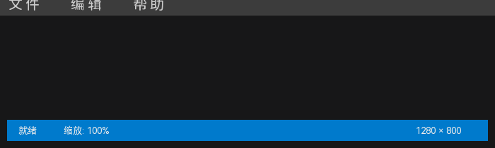
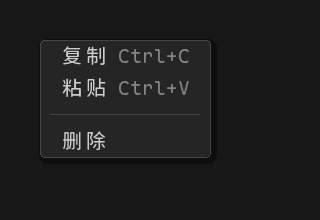

16 菜单、状态栏与右键菜单
这些控件由“控件本身 + 条目/分区 + 目标关系”组成，不能只靠改文字完成。建议先完成条目数据，再绑定条目事件，最后在预览中检查展开/弹出和动作。

图 16-1 MenuBar 顶部菜单与 StatusBar 底部分区示例
16.1 菜单栏 MenuBar
16.1.1 menus 行格式
| 行类型 | 写法 | 示例 |
|---|---|---|
| 顶层菜单 | 行首无 >；只写菜单标题 | 文件 |
| 一级菜单项 | 一个 >；标题后可用 @快捷键 | >保存@Ctrl+S |
| 更深层级 | >> 表示二级，依次类推 | >>另存为… |
| 分隔符 | 单独一行 -- | -- |
一个完整的 menus 示例：
文件
>新建@Ctrl+N
>打开@Ctrl+O
>保存@Ctrl+S
>--
>退出
编辑
>撤销@Ctrl+Z
>重做@Ctrl+Y
>--
>主题
>>深色
>>浅色
帮助
>关于顶层菜单行可以追加面板级属性（字号、字体名、阴影半径），格式为 菜单标题@字号@字体名；具体可用字段以属性面板提示为准。普通菜单项只把 @ 后的第一段作为快捷键。
16.1.2 在 Designer 中操作
- 放置 MenuBar，设置高度和字体；通常放在窗口顶部并使用横向拉伸。
- 在属性面板的 menus 行填写上面的层级文本，先用“文件/编辑/帮助”三个菜单验证格式。
- 切换到事件页签，展开菜单项树，选择具体菜单项并添加点击事件。
- 预览菜单展开，检查快捷键、分隔符和子菜单层级。
- 导出后点击菜单项，确认对应 action 执行。
事件绑定按菜单路径/索引保存。插入、删除或重排菜单项后，原事件路径可能失效；设计器会提示丢弃数量，请重新检查事件树。
16.2 状态栏 StatusBar
16.2.1 items 行格式
状态栏由多个分区组成，items 一行一个分区，格式为：
文本@背景色@文字色@字号@字体名@阴影色@阴影偏移X@阴影偏移Y最简示例（只写文本）：
就绪
缩放: 100%
1280 × 800带分区颜色和字号的示例：
就绪@#007ACCFF@#FFFFFFFF@13
缩放: 100%@#007ACCFF@#E8F0FFFF@13
1280 × 800@#007ACCFF@#FFFFFFFF@13分区 ID 由设计器生成（stb_0、stb_1……）；行式文本不需要手写 ID。对齐、可点击等行为以属性面板/schema 为准。
16.2.2 在 Designer 中操作
- 放置 StatusBar，设置贴底位置和横向拉伸。
- 在 items 中填写分区文本；需要颜色/字号时按顺序追加样式。
- 需要可点击分区时，在事件页签展开状态栏条目树，逐项绑定点击事件。
- 预览中点击分区，确认 action 执行、状态文字更新。
16.2.3 常见问题
| 现象 | 检查 |
|---|---|
| 分区挤在一起 | 控件宽度、字体和分区数量；状态栏通常应横向拉伸 |
| 点击分区无动作 | 是否绑定到正确的分区下标/事件；分区 ID 是否因编辑 items 改变 |
| 颜色不生效 | 样式字段顺序、颜色格式；项目主题是否覆盖 |
16.3 右键菜单 ContextMenu

图 16-2 ContextMenu 示例：复制/粘贴/分隔线/删除
16.3.1 items 行格式
ContextMenu 的 items 与 MenuBar 类似，但每个条目直接构成一个右键菜单项：
复制@Ctrl+C
粘贴@Ctrl+V
--
删除标题@快捷键：条目文字和右侧快捷键提示。--：分隔线，单独一行。- 空行忽略；不要为分隔线绑定事件。
16.3.2 绑定目标控件
- 放置 ContextMenu，在属性面板编辑 items。
- 选中 ContextMenu，在“目标控件”下拉中选择要响应右键的控件 ID；画布根也可选。
- 给每个菜单项绑定点击事件；在事件页签展开 ContextMenu 条目树逐项设置。
- 在预览中右键目标控件，确认菜单在该位置弹出。
- 点击菜单项，确认 action 执行且菜单关闭。
| 设置 | 说明 |
|---|---|
| 目标控件 | 必须是已存在的控件 ID，或画布根；目标删除后绑定会被清理 |
| 目标控件类型 | Button、Label、Panel、ListView、Animation 等都可作为目标；具体以当前引擎版本支持为准 |
| 事件 | 条目点击事件；事件树路径对应菜单条目顺序 |
| 可见性 | 设计画布上的菜单只用于编辑；运行时由右键触发显示 |
如果右键没有弹出菜单，按顺序检查：目标 ID 是否存在且可见/启用、ContextMenu 是否绑定了目标、菜单 items 是否为空、当前是在预览/导出运行而非设计画布、引擎版本是否支持该目标类型。
16.4 弹窗 Dialog、Popup 与 ConfirmPopup
| 控件 | 用途 | 设计期注意 |
|---|---|---|
| Dialog | 带确认/取消按钮的模态或非模态对话框 | 设计器通常显示占位/编辑态；内容区可以放子控件 |
| Popup | 自定义浮层，例如下拉面板、提示层 | 检查可见性、叠放顺序和关闭策略 |
| ConfirmPopup | 确认/取消两按钮浮层 | 设置确认/取消文本并绑定结果事件 |
- 浮层通常会遮挡下层控件；设计时确认父容器和 z 顺序。
- 弹窗内容可以在设计器中编辑，但运行时的打开/关闭通常由按钮事件或代码控制。
- Dialog 的确认/取消结果与普通点击事件不同，导出后检查宿主注册的 handler。
- 预览时先用一个按钮触发显示，再检查关闭后下层交互是否恢复。
16.5 复合控件自检
- 条目数量、标题、快捷键和分隔符在属性面板中是否一致。
- 事件树中的条目路径是否与最终显示顺序一致。
- 预览中实际点击条目，确认执行的是目标 handler。
- 导出工程后检查条目 action 和 handler 名称。